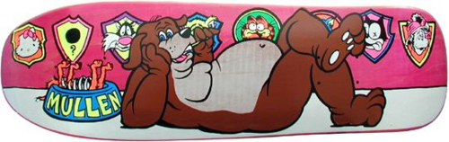
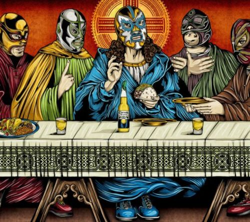
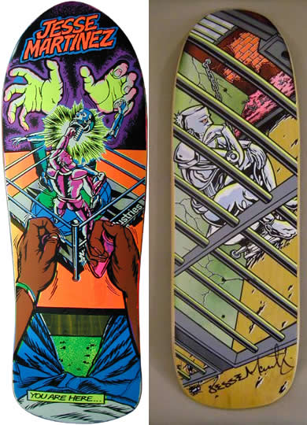

Another awesome mid 90s Mark McKee World Ind deck.

‘The Last Fiesta’ Cultural art exhibit opened the day before Easter. These are awesome. A simple idea, but well executed.

Jesse Martinez Robot 2 part series by Mark McKee.